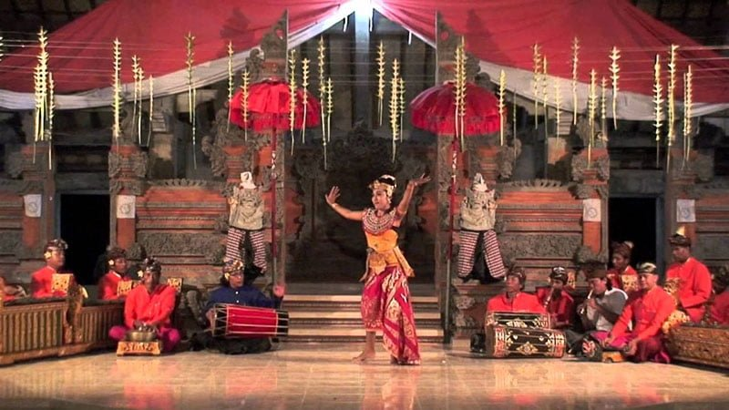

Tari Panji Semirang
Tari Panji Semirang adalah salah satu jenis tari tunggal dari Bali yang tercipta pada tahun 1942 oleh I Nyoman Kaler. Seni tari ini menggambarkan sebuah pengembaraan Galuh Candrakirana yang menyamar sebagai seorang lelaki demi mencari kekasihnya yaitu Raden Panji Inu Kertapati.
Seperti halnya Tari Trunajaya, Tari Panji Semirang termasuk dalam kategori tari babancihan karena menghadirkan karakter laki-laki dan perempuan. Meskipun dikatakan sebagai tari putra halus, tari yang pada awalnya bernama Kebyar Dung ini lebih sering dibawakan oleh penari putri.
Tari ini terus berkembang sejak pertama kali di tarikan oleh murid I Nyoman Kaler yakni Luh Cawan. Salah satu ciri khas tari ini bisa dilihat dari gerakannya lebih menyerupai tari putra dengan diiringi oleh musik pengiring bertempo cukup cepat.
Tata busana pun terkesan rumit dan untuk beberapa keadaan juga menggunakan properti tambahan berupa kipas. Biasanya penari menggunakan gelungan, kain prada, sabuk prada, penutup dada, badong, ampok-ampok, gelang kanah, kipas, serta bunga merah dan putih.
<< Kembali